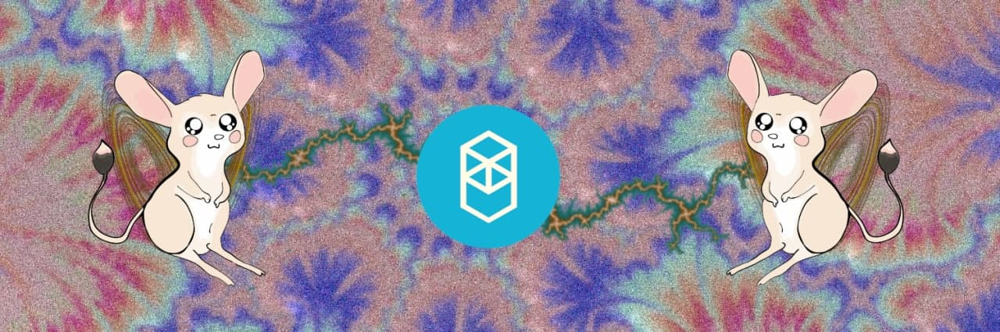

The Roingus Project
Experimental Fantom cryptocurrency

Whas exactly is Roingus?
Roingus is the name of a rodent of the Jerboa species, represented in a group of gifs spammed in a mongolese basket weaving inspired chat of crypto enthusiasts. After being teased for months by people with functional brain problems about making a token, the main dev did the needful one day, building it over an upgradeable contract. With the help of the crazy ideas of anon dev, and the liquidity provided by several bagholders, we will see this thing eatig amd gettimg pumped!! What's the utility of RNGS token?
The token will be used for governance, treasury control and DAO controlled subcontrats. It's the ticket into Roingus realm, and the team hopes you are ready for the ride!Why deploy on Fantom blockchain?
Because it's not filled with Indian filth, the gas is still cheap for experimental on-chain projects to exist, and most of Fantom users are smart and capable invididuals with a sense of taste.Why is team anon?
Why not? Why do you need to know? Do you work for CIA? FBI? Dr.Pavel didn't fly so good. The fire rises.